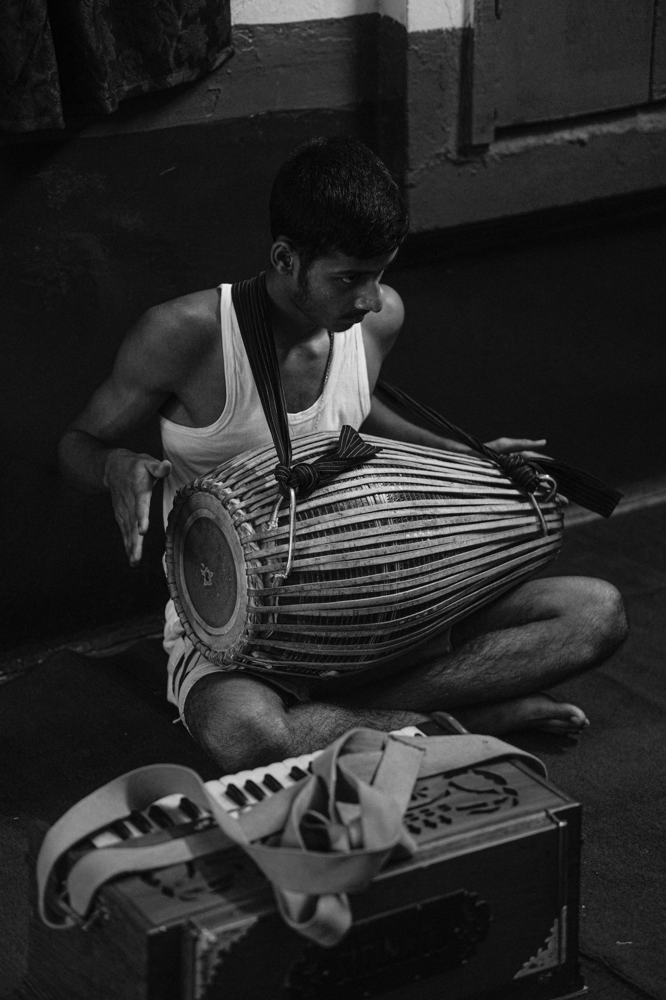
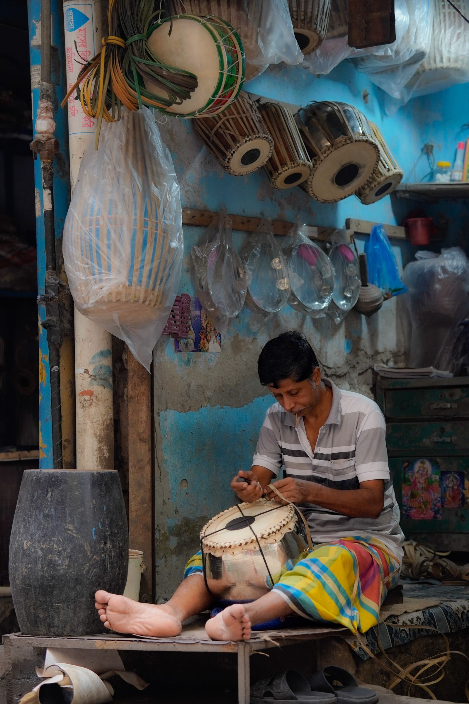

The Craft · About
First the clap. Then the count. Then — much later — the drum.
I was nine when my father took me to a baithak in Sadashiv Peth and sat me where I could see the tabla player's hands instead of the singer's face. I have been watching hands ever since — my guru's first, now my students'.

How I was taught
For eleven years I learned from Pandit Vishwas Athavale in the guru-shishya way: same room, same hour, the lesson ending when the cycle sat still, not when the clock said so. For the first four months I did not touch a drum. I clapped teental and counted it aloud — sam, tali, khali, tali — until the sixteen beats lived in my hands and my mouth at the same time. Only then was I given bols.
That order is the whole of my teaching. A student who can clap a cycle honestly can learn any theka I give them. A student who starts on the drum starts by hiding — behind speed, behind volume, behind the noise of their own playing. My studio rule is unchanged since my first student in 2009: clap first, count aloud, drum last.
My first public accompaniment was at nineteen, for a vocalist twice my age, in a hall with one working fan. I have played bigger rooms since. None of them taught me more than that fan did about holding a slow theka while everything around you wobbles.
Two different jobs
Accompaniment is not a quieter solo
Keep the road home
Behind a vocalist or a dancer, my job is the cycle itself: the theka held so steadily that the soloist can leave it and trust it to be there when they return. I answer phrases when a door is left open, I stay silent when the voice is doing its best work, and I guard sam like a lighthouse keeper — not the attraction, but the reason nobody is lost. With Kathak, the bargain is reversed in the best passages: the dancer's feet improvise, and my lehara is the fixed star they navigate by.
Spend what you saved
A tabla solo is an argument made in rhythm: peshkar that opens the tala up slowly, kaydas that develop one idea until it flowers, relas that run like monsoon water. It is the same grammar as accompaniment with the duties reversed — now the tanpura and lehara keep the road home for me. I take two or three solo evenings a year. More than that, and a player starts accompanying himself out of habit, which is a pleasant way to stop growing.
The ladder
What a student learns, year by year
Printed here so nobody enrols under a misunderstanding. The years are honest averages for a student practising forty minutes a day; talent moves the scenery, not the order of the rungs.
| Stage | Talas | What the hands learn | The test before moving on |
|---|---|---|---|
| Year 1 | Keherwa · Dadra | Clapping and counting every cycle aloud; the first bols — na, tin, ge, ke — struck clean and separate; the basic thekas at 60 BPM. | Twenty cycles of keherwa at 60 BPM without the count drifting. |
| Year 2 | Teental | The sixteen-beat cycle in full; theka in vilambit and madhya laya; hearing sam from inside the cycle, not by counting to it. | Teental theka held at 60 BPM while I deliberately talk over it. |
| Year 3 | Jhaptal · Rupak | Uneven vibhags — 2+3+2+3, and rupak's wave on sam itself; first kayda in teental; accompanying a recorded voice without chasing it. | Jhaptal held through a full recorded khayal bandish. |
| Year 4 | All five, deeper | Peshkar and rela in teental; lehara duty for dance; reading a soloist's cues — the breath before a tihai, the look that means “answer me”. | A full baithak accompaniment, unrecorded, unrescued. |
| Year 5 + | The student's own voice | Composing within the grammar; solo repertoire; teaching the clap to someone newer — the fastest way to find the holes in your own cycle. | The students' stage: a public cycle, held, in front of strangers. |
The drum itself
The dayan — the right-hand drum, mine is sheesham — is tuned with hammer and wooden blocks to the soloist's sa, and re-tuned between items if the hall is warm. The black centre, the syahi, is built up in layers by the maker and is most of the drum's voice; the skin it sits on, the puddi, is replaced roughly once a year, and for a week afterward the drum sounds like a talented stranger until it settles.
My pair was made in Pune and is maintained by the same maker's family. When students ask which tabla to buy, I take them to the workshop before I let them spend anything: a drum chosen by ear, in person, beats a famous label shipped in a box. The shop photograph is the kind of room I mean — wall to wall with drums, and you play twelve before you pay for one.

Forty minutes, in this order
Ten minutes of clapping and counting the day's tala, aloud, at learning tempo. Fifteen minutes of theka only — no variations, no ornaments; the plain cycle, polished. Ten minutes on one kayda or one weak vibhag, isolated. Five minutes playing along with a recording, accompanying, not performing. Students who keep this shape for a year improve faster than talented students who practise in bursts — I have twenty-seven years of watching both kinds, and it is not close.